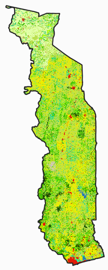

2.1.5 ProREDD
Dans le cadre du premier inventaire forestier national de 2015/16, le projet GIZ “ProREDD” a réalisé une carte d’occupation des sols à partir d’images RapidEye des années 2013/14 (Rapport méthodes et résultats).
La carte n’est pas utilisée pour l’analyse de l’évolution des surfaces forestières dans le cadre du NRF-MRV REDD+, mais elle est disponible comme carte comparative et pour d’autres analyses.
2.1.5.1 Acquisition des données
Les cartes pour les différentes régions ont été fournies par L’Unité de gestion de bases de données cartographiques (UGBDC) de la Direction des études et de la planification (DEP) le ministère sous forme de Shapefiles.
2.1.5.2 Prétraitement des données
Les shapefiles sont lus et convertis avec l’outil “grid_gridding” de SAGA GIS en données raster avec résolution originale des images RapidEye de 5 mètres, puis reprojetés sur le raster Landsat de 30 mètres.
Example

Script R: 01_SSTS/01_data/_src/prep-ProREDD.R
###############################################################################
# prep-ProREDD.R: rasterizer la carte d'occupation des terres RapidEye
# -----------------------------------------------------------------------------
# Bern University of Applied Sciences
# Oliver Gardi, <oliver.gardi@bfh.ch>
# 13 Mai 2020
# Définitions des variables ===================================================
IN.DIR <- paste0(DIR.RAW.DAT, "/RapidEye/shapefiles")
OUT.DIR <- paste0(DIR.SST.DAT, "/ProREDD")
if(!dir.exists(OUT.DIR)) dir.create(OUT.DIR)
# Rasterizer Shapefiles avec l'outil grid_gridding de SAGA ====================
files <- dir(IN.DIR, pattern="\\.shp$", recursive=TRUE, full.names=TRUE)
registerDoParallel(CORES - 1)
foreach(file=files) %dopar%{
out.file <- sub("shp$", "sdat", file)
system(paste0("saga_cmd grid_gridding \"Shapes to Grid\" ",
"-TARGET_DEFINITION 0 -INPUT \"", file, "\" ",
"-FIELD \"code\" -OUTPUT 2 -MULTIPLE 0 -LINE_TYPE 0 ",
"-POLY_TYPE 0 -GRID_TYPE 2 -TARGET_USER_SIZE 30.0 ",
"-TARGET_USER_FITS 0 -GRID \"", out.file, "\""))
}
# Lire et fusionner les différentes scènes raster
scenes <- lapply(dir(IN.DIR, pattern="\\.sdat$", recursive=TRUE, full.names=TRUE), raster)
scenes["tolerance"] <- 0.4
RE <- do.call(merge, scenes)
# À reviser: Reprojection sur l'image Landsat
AGB <- raster("../output/3_forest-biomass/2_ref-maps/TGO_2015_AGB.tif")
RE_resampled <- resample(RE, AGB, method="ngb")
writeRaster(RE_resampled, paste0(OUT.DIR, "/TGO_30m.tif"), datatype="INT2S")